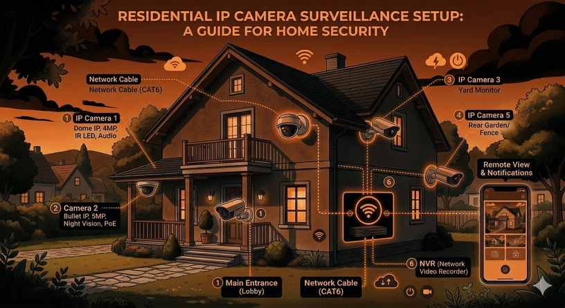
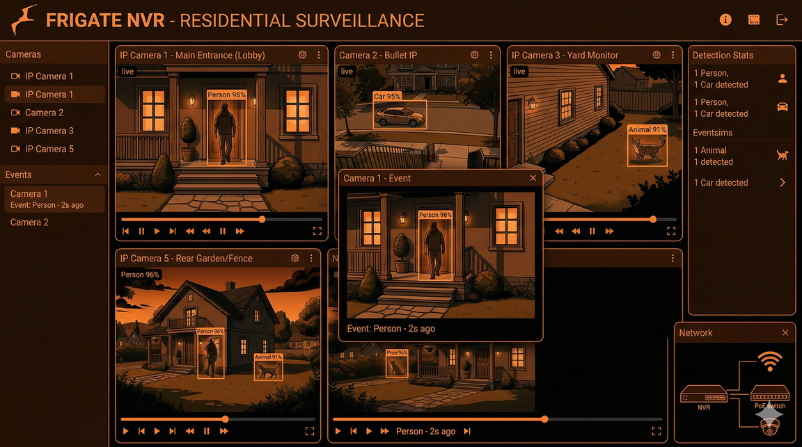

Running Frigate NVR on Kubernetes: Taming Nine Cheap IP Cameras
From nine mismatched cameras and a licensed Blue Iris setup to a containerized, AI-driven surveillance pipeline on k3s — with Cloudflare Tunnel, nightly rsync backups, and the hard lesson that upscaling bad video is never the answer.
The Starting Point
I had nine mismatched IP cameras — seven budget Xiongmai PTZ units, a 4K Reolink, and a 720p Yi Home — wasting network space. Each had its own terrible web UI, proprietary storage, and useless motion detection that either missed everything or triggered constantly. Finding a specific event required manually scrubbing through SD cards across multiple browser tabs.
To solve this, I eventually paid for a licensed Blue Iris NVR setup. It did the job adequately for years, successfully bringing the disparate feeds into one place. However, Frigate's clear advantages — specifically its superior AI object detection, native containerization, and low resource overhead for tracking — could not be ignored. I went all in, flipped the switch, and migrated the entire surveillance stack to Frigate running as a container on my existing k3s cluster.

The camera fleet meets the cluster.
Network Isolation: The Brutal Truth About Cheap Cameras
These cameras are strictly isolated to the LAN for a reason. Cheap IP cameras, especially the Xiongmai units, attempt to phone home to servers in China out of the box via hardcoded DNS and UPnP hole-punching.
To stop this, I set their gateway and DNS to a dead IP address
(192.168.100.254). They can talk to the local subnet
where Frigate lives, but they have no route to the internet. The only
exception is the Yi camera, which fundamentally refuses to complete its
Wi-Fi handshake without a valid gateway.
Network isolation is the only reliable security for these devices.
Frigate on Kubernetes
Frigate runs on my K3s control plane, an amd64 laptop. It cannot run on my worker nodes (OnePlus smartphones running postmarketOS) because real-time video decoding requires significant CPU overhead that ARM mobile processors cannot sustain.
I do not use a Coral TPU. Detection runs purely on the CPU using the standard TFLite model, which is sufficient for my current load. All data writes to a single 1.8TB local hard drive. Most cameras follow a standard setup: Frigate uses the low-resolution sub-stream for detection, and pulls the high-resolution main stream for recording when an event triggers.
Face Recognition: Stop Upscaling Bad Video
I enabled face recognition on the 4K Reolink camera. Initially, it failed completely.
The Reolink's sub-stream is permanently locked at 640×360. At that resolution, a human face is barely 20 pixels wide. That is mathematically useless for an AI embedding model trying to extract facial landmarks. My first instinct was to use go2rtc to transcode and upscale the sub-stream to 720p.
This was a complete failure. Upscaling a 360p video does not create new detail; it simply stretches blurry pixels and burns CPU cycles. My CPU was pinned at 90%, and the AI still could not recognize anyone.

Upscaling doesn't add information — downscaling from native 4K does.
The correct solution was counterintuitive: feed the native 4K main stream directly to Frigate and let Frigate downscale it to 720p for detection. Downscaling preserves actual high-frequency sensor detail. A 60-pixel face downscaled from a native 4K image contains usable data; a 60-pixel face upscaled from a 360p stream is garbage. The CPU cost of decoding the 4K stream is manageable, and detection actually works.
Remote Access and Backups
I do not port-forward. Remote access is handled via a Cloudflare Tunnel running as a pod in the Frigate namespace. It maps an external domain to the internal Frigate service, secured by Cloudflare Access with email OTP. I can view live streams and AI events from anywhere through a zero-trust tunnel.
For backups, relying on a single 1.8TB drive is a failure waiting to happen. A daily Kubernetes CronJob rsyncs the entire Frigate directory to a 3.6TB external drive attached to my cluster's SSH bastion (an old netbook). It is a direct mirror — if Frigate purges a 90-day-old clip, the backup script purges it too, ensuring neither drive runs out of space.
┌──────────────┐ rsync @ 2AM ┌───────────────────┐
│ k3master │ ─────────────────► │ jumphost │
│ /mnt/frigate│ (CronJob) │ /mnt/backup │
│ 1.8TB HDD │ │ 3.6TB USB drive │
└──────────────┘ └───────────────────┘Failures and Lessons Learned
ONVIF is broken on Reolink. The camera advertises ONVIF PTZ support, but Frigate throws errors when attempting to use it. Pan and tilt only work reliably through Reolink's proprietary app.
Configuration syntax is unforgiving.
face is not a valid Frigate object class to track
directly, and snapshots is not a valid ffmpeg input role.
I wasted time debugging configurations that looked logically correct
but silently failed.
Vendor features break standard protocols. Xiongmai includes a "High Speed Download" firmware feature. It destabilizes RTSP streams, causing them to drop every few minutes. Disable it immediately.
The Payoff
The system is now entirely observable and automated. Moving away from Blue Iris and individual SD cards to a containerized, AI-driven pipeline replaced continuous 24/7 writes with precise event-based recording. I can search for specific objects across nine cameras from a single dashboard. The hardware cost was negligible, utilizing existing spare components and open-source software to outperform standard commercial NVR systems.
Cluster Context
This runs on the same k3s cluster described in previous posts — a Lenovo laptop as the control plane and three OnePlus smartphones running postmarketOS as ARM64 workers, connected via USB ethernet.
| Node | Role | Arch | Hardware |
|---|---|---|---|
| k3master | Control plane + Frigate | amd64 | x86_64 laptop (headless) |
| one6t | Worker | arm64 | OnePlus 6T (Snapdragon 845, 8GB) |
| one62 | Worker | arm64 | OnePlus 6 (Snapdragon 845, 6GB) |
| one61 | Worker | arm64 | OnePlus 6 (Snapdragon 845, 6GB) |
Previous posts: Building the cluster · Deploying the guitar app · Running Ollama locally · The sidecar pattern